IoT지식능력검정 (2017-11-19 기출문제)
1과목: 임의 구분
1. 사물인터넷의 특성으로 가장 거리가 먼 것은?
- 지능형 인터페이스를 갖는다.
- 정보망에 잘 통합되는 특성을 갖는다.
- 자기 식별자와 각각의 특성을 갖는 가상 사물로만 구성되어 있다.
- 사물들이 연결됨으로써 새로운 기능 혹은 새로운 가치를 제공한다.
(정답률: 86%)

2. RFID/USN/M2M과 비교하여 사물인터넷에 대한 내용으로 옳지 않은 것은?
- 사물인터넷은 인터넷 중심의 통신 네트워크이다.
- 사물인터넷은 즉시적인 스마트 서비스를 제공한다.
- 사물인터넷 디바이스는 수동적으로 단순정보를 수집한다.
- 사물인터넷의 디바이스 형태는 센서와 액츄에이터의 Physical Thing과 데이터와 프로세스 등을 포함한 Virtual Thing 형태이다.
(정답률: 88%)
3. 아래 설명과 가장 가까운 사물인터넷 응용서비스 분야는?
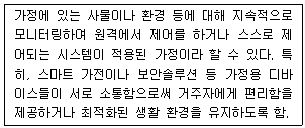
- 스마트시티
- 스마트홈
- 유통 및 마케팅
- 스마트팩토리
(정답률: 94%)
4. 산업혁명에 대한 설명으로 옳지 않은 것은?
- 1차 산업혁명 : 증기기관을 동력으로 사용하는 기계장치를 통한 생산
- 2차 산업혁명 : 화학에너지를 동력으로 사용하여 분업에 기반한 소량생산
- 3차 산업혁명 : 전자장치 및 IT를 이용한 한 차원 높은 생산 자동화
- 4차 산업혁명 : 가상공간-현실 생산시스템에 기반을 둔 생산체계
(정답률: 83%)
5. 사물인터넷 표준화 기구/단체에 대한 설명으로 옳지 않은 것은?
- ITU-T : SG13, SG17, SG20 등 IoT 서비스/네트워크/통신/보안 분야 표준 논의
- IEEE : 무선 LAN/PAN 기술 관련 사실상의 표준화 기구로서, 스마트미터링, 옥외 저전력 근거리/중장거리 통신 등의 표준 개발
- IETF : 인터넷 프로토콜 관련 사실상의 표준화기구로서, 저전력 유무선 네트워크를 위한 적응 계층 및 CoAP 등의 표준 개발
- 3GPP : 사물인터넷을 구현시 REST 구조 기반으로 경량형 CoAP 프로토콜로 사물인터넷 장치들을 연결하고, 장치에 존재하는 자원들을 상호제어 할 수 있게 하는 표준 개발
(정답률: 81%)
6. 사물인터넷의 공식적 표준과 사실상 표준의 비교로 옳지 않은 것은? (순서대로 구분 - 공식적 표준 - 사실상 표준)
- 표준화와 사업화 - 사업화 우선 - 표준화 우선
- 표준화 열쇠 - 표준화 기관이 강제 - 시장 점유율,참여 기업 수
- 단일표준, 제공여부 - 원칙적 단일표준 - 시장경쟁에 위임
- 표준 제정속도 – 느림 - 빠름
(정답률: 79%)
7. 사물인터넷 아키텍처 중 oneM2M의 계층 모델이 아닌 것은?
- Application Layer
- Session Layer
- Common Services Layer
- Network Services Layer
(정답률: 84%)
8. 아래 설명 중 괄호 안에 들어갈 알맞은 용어는?
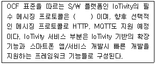
- CRUDN(Create, Read, Update, Delete and Notify)
- 3GPP(3rd Generation Partnership Project)
- Thread
- IETF CoAP
(정답률: 70%)
9. 아래 내용에서 설명하는 것은 무엇인가?
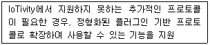
- 프로토콜 플러그인 관리자(PPM)
- 소프트웨어 센서 관리자(SSM)
- 사물 관리자(TM)
- 알림 관리자(NM)
(정답률: 86%)
10. 사물인터넷 생태계의 경우 이용기관 및 기업별 개별적·폐쇄적 생태계에서 개방형 서비스 생태계로 전환되고 있는 상황이다. 센서네트워크와 비교하여 ‘미래 IoT’ 관점에서 사물인터넷 플랫폼 기술에 대한 설명으로 옳지 않은 것은?
- 서비스 방식 : 개방형 사물인터넷 인프라상에서 자유로운 디바이스 및 서비스 공유·연동
- 특징 : 개방형 인프라구조, 수평적 통합, 플랫폼간 호환성 지원, 데이터/프로세스/지능 중심, B2B/B2C/C2C 지원
- 규모 : 인터넷 기반 글로벌 규모(수백억개 이상 수용)
- 생태계 : 개발 ㆍ 구축 ㆍ 운영 ㆍ 유지비용 과다, 도메인 중심 생태계
(정답률: 92%)
11. 사물인터넷 공통보안 7대원칙 중 안전한 초기 보안 설정 방안 제공에 대한 내용으로 옳지 않은 것은?
- 제조 시 기본으로 설정되어진 계정이름과 패스워드를 설치 시 변경하여야 한다.
- 서비스에서 강력한 암호와 무결성을 요구하는 경우 옵션 중 강한 암호를 기본으로 설정하여야 한다.
- 다중 사용자로 구성되는 서비스 환경에서는 최대한의 권한으로 초기 설정해야 한다.
- 다중 요소 인증이 옵션으로 제공될 경우 필요시 활성화하여 설정하여야 한다.
(정답률: 91%)
12. 아래 내용에서 설명하는 사물인터넷 보안위협은?
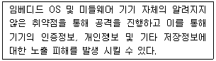
- 부채널 공격
- 제로데이 취약점
- 개인정보탈취 및 정보유출
- 서비스거부 공격 및 네트워크 공격
(정답률: 82%)
13. 사물인터넷 기술의 활성화 및 확대는 기존의 정보보호 체계에 영향을 주고 있다. 정보보호 패러다임의 변화로 옳지 않은 것은?
- 보호 대상 : (PC, 모바일) → (가전, 자동차, 의료기기 등 모든 사물)
- 보안 주체 : (ISP, 보안 전문업체, 이용자) → (ISP, 보안 전문업체, 이용자 + 제조사, 서비스제공자)
- 피해 범위 : (정보유출, 금전피해) → (정보유출, 금전피해 + 시스템 정지, 생명 위협)
- 대상의 특징 : (고성능, 고가용성) → (고성능, 고가용성 + 고전력, 초경량)
(정답률: 94%)
14. 아래 내용이 설명하는 사물인터넷 플랫폼 사례는?
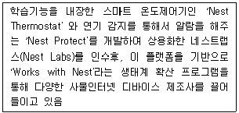
- 모비우스 및 앤큐브 사물인터넷 플랫폼
- 애플의 사물인터넷 플랫폼
- 구글의 사물인터넷 플랫폼
- 제너럴일렉트릭의 사물인터넷 플랫폼
(정답률: 70%)
15. 이동통신사에서 휴대폰을 원격 제어/관리하고자 하는 목적에서 개발 되었으며 장치관리 기능이 MO(Management Object) 기반 자원으로 구현되어 HTTP를 이용한 REST 기반의 프로토콜로 동작하는 기술은?
- OMA LWM2M(Lightweight M2M)
- BBF(Broadband Forum) TR-069
- OID(Object Identifier)
- OMA(Open Mobile Alliance) DM(Device Management)
(정답률: 84%)
16. 아래 설명 중 각 괄호 안에 들어갈 알맞은 용어는?
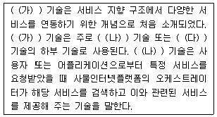
- (가) 가상 컴포지션
(나) Service Orchestration
(다) Service Choreography - (가) 서비스 컴포지션
(나) Service Orchestration
(다) Service Choreography - (가) 서비스 컴포지션
(나) Service Choreography
(다) Service Orchestration - (가) 가상 컴포지션
(나) Service Choreography
(다) Service Orchestration
(정답률: 74%)
17. 사물인터넷 플랫폼 기술에 대한 설명이 옳게 연결된 것은?
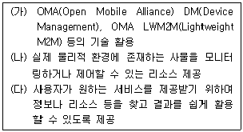
- (가) : 장치관리 기술
(나) : 식별체계 기술
(다) : 검색 기술 - (가) : 사물가상화 기술
(나) : 식별체계 기술
(다) : 시맨틱 기술 - (가) : 장치관리 기술
(나) : 사물가상화 기술
(다) : 검색 기술 - (가) : 사물가상화 기술
(나) : 장치관리 기술
(다) : 식별체계 기술
(정답률: 82%)
18. 사물인터넷 플랫폼의 기능 블록 중 ‘시맨틱 및 지식서비스 기능 블록’의 경우 데이터간의 호환성 및 데이터분석, 지능적인 서비스를 제공한다. 시맨틱 및 지식서비스 기능 블록이 제공하지 않는 기능은?
- 지능적 사물인터넷 서비스를 제공하기 위하여 지속적인 지식 습득 및 제공을 위한 지식 관리 기능
- 데이터에 대한 고차원적 분석을 통한 서비스를 제공하기 위한 데이터 분석 기능
- 다양한 디바이스, 리소스, 서비스들에 대한 검색기능을 제공하는 디스커버리 기능
- 시맨틱 엔진 및 저장소를 제공하고 시맨틱 검색기능 등을 제공하는 시맨틱 기능
(정답률: 50%)
19. 다음 중 WSN(Wireless Sensor Network)에서 사물인터넷으로 발전되는 입장에서의 네트워크 이슈 가운데 가장 중심이 되는 부분이라고 볼 수 있는 것은?
- IPv4 프로토콜 수용
- NFC 프로토콜 수용
- IPv6 프로토콜 수용
- ZigBee 프로토콜 수용
(정답률: 89%)
20. Wi-Fi 표준 중 아래 내용에 해당하는 것은?
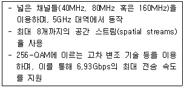
- IEEE 802.11a
- IEEE 802.11g
- IEEE 802.11ad
- IEEE 802.11ac
(정답률: 74%)
21. 아래 내용에 해당하는 것은?
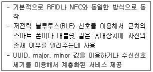
- 블루투스 비콘
- 블루투스 1.0
- 블루투스 2.0
- 블루투스 3.0
(정답률: 95%)
22. 지그비(Zigbee) 통신기술 중 아래 내용에 해당하는 것은?
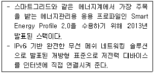
- Zigbee RF4CE
- Zigbee Advance
- Zigbee Pro
- Zigbee IP
(정답률: 85%)
23. 아래 내용에서 괄호 안에 들어갈 알맞은 내용은?
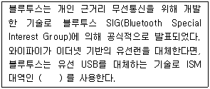
- 13.56MHz
- 433MHz
- 900MHz
- 2.4GHz
(정답률: 85%)
24. Z-Wave 통신기술에 대한 설명으로 옳지 않은 것은?
- 소형, 저전력, 저비용, 근거리 무선통신을 지향하며 IEEE 802.15.4 기반으로 구성된다.
- 혼잡한 2.4GHz 주파수 기반의 통신기술에 비해, 간섭에 자유로운 점이 장점이다.
- 소스 라우팅 기반의 메시네트워크 토폴로지가 적용되어 네트워크를 구성한다.
- Z-Wave 얼라이언스에서 개발한 홈오토메이션의 모니터링과 컨트롤을 위한 저전력 통신 기술이다.
(정답률: 58%)
25. RFID 주파수 대역별 주 응용 분야로 가장 거리가 먼 것은?
- 135KHz 이하 : 이력관리/보안/동물관리 등
- 13.56MHz : 교통카드, 도서/재고관리 등
- 433MHz : 여권, ID카드 등
- 900MHz : 유통, 물류 등
(정답률: 86%)
2과목: 임의 구분
26. RFID 시스템의 필수 구성요소로 옳지 않은 것은?
- 미들웨어(MiddleWare)
- 바코드(BarCode)
- 리더(Interrogator)
- 태그(Transponder)
(정답률: 88%)
27. 국내 사물인터넷 전용망으로 가장 거리가 먼 것은?
- LoRa(Long Range)
- LTE-M(Long Term Evolution for Machines)
- NB-IoT(NarrowBand-Internet of Things)
- RFID(Radio Frequency IDentification)
(정답률: 80%)
28. 사물인터넷 응용계층 프로토콜 중 아래 내용에 해당하는 것은?
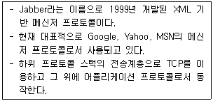
- HTTP(HyperText Transfer Protocol)
- CoAP(Constrained Application Protocol)
- MQTT(Message Queuing Telemetry Transport)
- XMPP(Extensible Messaging And Presence Protocol)
(정답률: 75%)
29. 사물인터넷 응용계층 프로토콜에 대한 설명으로 옳지 않은 것은?
- HTTP는 웹상에서 클라이언트와 서버 간 정보를 주고 받을 수 있는 어플리케이션 계층 프로토콜이다.
- CoAP은 하위 프로토콜 스택으로 물리 및 링크 계층은 저전력 센서노드를 위한 IEEE 802.11v 표준을 기반으로 삼고 있고, 네트워크 계층은 IPv6 프로토콜을 사용한다.
- MQTT는 지연 및 손실이 심한 네트워크 환경에서 검침기, 센서 등 작은 기기들의 신뢰성 있는 메시지 전달을 위해 개발되었다.
- XMPP는 Publish/Subscribe 방식과 Request/ Response 방식의 메시지 교환방식을 모두 지원한다.
(정답률: 56%)
30. 사물인터넷 전용망 통신을 위한 핵심 요구사항으로 가장 거리가 먼 것은?
- 저전력 소모 설계
- 안정적인 장거리 커버리지 제공
- 단말기의 저가 공급을 통한 낮은 구축 비용
- 소규모의 단말기 접속 구현
(정답률: 62%)
31. 사물인터넷 디바이스 H/W 플랫폼 중 ‘라즈베리파이3 모델B’의 지원 기능으로 옳지 않은 것은?
- 일체형 무선 와이파이
- 블루투스 4.1 BLE
- 그래픽 프로세서(400MHz)
- LTE 통신모듈
(정답률: 71%)
32. OSHW(Open Source Hardware) 플랫폼 중 이동통신 모뎀 기능을 포함하고 있는 것은?
- 갈릴레오
- 링크잇원
- 라즈베리파이
- 아두이노
(정답률: 68%)
33. 사물인터넷 디바이스 S/W 플랫폼 중 ‘&Cube(앤큐브)’에 대한 내용으로 옳지 않은 것은?
- &Cube:Rosemary - 게이트웨이 버전 S/W 플랫폼
- &Cube:Lavender - 디바이스 버전 S/W 플랫폼
- &Cube:Chamomile - CoAP지원 S/W 플랫폼
- &Cube:Mint - 초경량 네트워크 버전 S/W 플랫폼
(정답률: 69%)
34. &Cube는 6가지 코어 블록으로 구성되어 있다. TAL(Thing Adaptation Layer) 영역과의 연동 및 연결된 사물을 관리하는 기능을 수행하는 코어 블록은?
- Application Manager
- Device Manager
- Thing Manager
- Interaction Manager
(정답률: 66%)
35. 아래 내용에 해당하는 센서는?
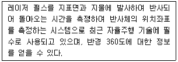
- RADAR(RAdio Detection And Ranging)
- 모션 센서
- LIDAR(Light Detection And Ranging)
- 충돌방지 센서
(정답률: 74%)
36. 반도체 공정기술 기반으로 성립되는 초소형 정밀기계 제작 기술로써 무거운 조립식 센서를 반도체 IC와 같은 실리콘 기판 상에 작게 구현할 수 있는 기술은?
- 나노기술
- MEMS(Micro Electronic Mechanical Systems)
- 반도체 집적기술
- 초경량화 기술
(정답률: 83%)
37. 사물인터넷 디바이스 S/W 플랫폼에 대한 설명으로 가장 거리가 먼 것은?
- 오픈소스 하드웨어 플랫폼에서 대부분 OS로 리눅스(Linux)와 리눅스의 변종 OS가 적용되고 있다.
- ARM(Advanced RISC Machine)에서 지원하는 mbed OS는 Cortex-M 시리즈 위에서만 동작한다.
- nanoQplus는 우선순위 기반 선점형 스케줄러를 갖는 멀티스레드 기반으로 리눅스 프로그래밍 방식을 사용하는 완전한 오픈소스 플랫폼이다.
- &Cube는 JVM 위에서 동작하도록 구현되어 있어 Windows, Linux, iOS등의 PC 환경은 물론 Embedded Linux 등의 환경에서도 동작한다.
(정답률: 59%)
38. 빅데이터 분석을 위한 알고리즘 중 아래 내용에 해당하는 것은?
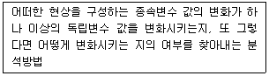
- 연관규칙 학습(Association Rule Learning)
- 군집화(Clustering)
- 델파이 기법(Delphi Technique)
- 회귀분석(Regression)
(정답률: 85%)
39. 빅데이터에 대한 내용으로 가장 거리가 먼 것은?
- 빅데이터를 이용하기 위해서는 과거에 주로 다룬 비교적 작은 크기의 정형화된 데이터에서 쓰이던 것과는 다른 차원의 기술과 인력이 요구된다.
- 빅데이터란 기존의 방식으로는 관리와 분석이 매우 어려운 데이터 집합, 그리고 이를 관리ㆍ분석하기 위해 필요한 인력과 조직 및 관련 기술까지 포괄한다.
- 빅데이터를 좁은 의미에서 정의하면 보통 수십에서 수천 테라바이트 정도의 거대한 크기를 갖고, 여러가지 다양한 비정형 데이터를 포함하고 있다.
- 빅데이터의 중요성으로 이전에 관리된 데이터만을 분석함으로써 예측 능력 보다는 비즈니스 효율성을 향상시키는 것을 우선 들 수 있다.
(정답률: 77%)
40. 빅데이터 특성에 대한 내용으로 가장 거리가 먼 것은?
- 빅데이터 특성은 ‘V’로 시작하는 양(Volume), 다양성(Variety), 속도(Velocity) 3가지 키워드로 나타낼 수 있다.
- 비즈니스 측면에서는 3V에 가상현실(Virtual reality)을 추가하여 4V를 사용하기도 한다.
- 3V 중 두 가지 이상의 요소만 충족한다면 빅데이터 라고 볼 수 있다.
- 빅데이터의 핵심 기술은 대규모 저장 시스템과 효과적인 데이터 처리 기술이다.
(정답률: 79%)
41. 클라우드 컴퓨팅 주요 기술에 대한 설명으로 옳지 않은 것은?
- 가상화는 넓은 의미로 컴퓨터 자원에 대한 추상화를 의미하며 다양한 형태의 가상화가 있으며, 클라우드 컴퓨팅에서는 서버, 스토리지, 네트워크가 대표적인 가상화 대상이다.
- 분산컴퓨팅은 클라우드 컴퓨팅 소프트웨어를 구성함에 있어 인트라넷과 인터넷으로 연결되어 있지 않은 다수의 컴퓨팅 자원을 연결하지 않고 분산 처리하는 기술이다.
- 시스템 관리는 단순한 사용자 인터페이스나 모니터링 만을 의미하지 않으며, 클라우드 컴퓨팅 이용자들에게 SLA에 기반한 사용자 가상 컴퓨팅 환경을 프로비저닝하고 제공된 가상 시스템을 모니터링하며, 사용자 서비스별 자원 활용 정도에 따른 동적인 자원할당 및 동적 스케쥴링을 제공해 주어야 한다.
- 서비스 플랫폼은 사용자들이 클라우드 컴퓨팅 인프라에 사용자 고유의 응용 또는 인터넷서비스를 구축하기 위한 인터페이스를 제공한다.
(정답률: 65%)
42. 컴퓨팅 자원 및 소프트웨어를 클라우드 서비스 사업자로 부터 임대하여 사용하는 클라우드 컴퓨팅 환경에 대한 설명으로 옳은 것은?
- 데이터의 소유 및 관리 : 소유와 관리가 동일
- 사용자 컴퓨터 설치 S/W : OS, 응용S/W
- 자원 구매/폐기 : 이용자
- 데이터 위치 및 컴퓨팅 주체 : 클라우드 서버(온라인)
(정답률: 56%)
43. 클라우드 서비스는 제공하는 자원의 레벨에 따라 3가지 모델로 분류한다. 클라우드 서비스 모델에 대한 설명으로 가장 거리가 먼 것은?
- IaaS : 이용자에게 서버, 스토리지 등의 하드웨어 자원만을 임대 · 제공하는 서비스
- PaaS : 이용자에게 소프트웨어 개발에 필요한 플랫폼을 임대 · 제공하는 서비스
- AaaS : 이용자에게 하드웨어 및 소프트웨어 자원을 임대 · 제공하는 서비스
- SaaS : 이용자가 원하는 소프트웨어를 임대·제공 하는 서비스
(정답률: 81%)
44. 클라우드 서비스 보안위협에 대한 내용으로 잘못 짝지어진 것은?
- 분산 처리에 따른 보안적용이 어려움 - 자원공유와 가상머신 동적 재배치로 인증/접근 제어 복잡도 상승
- 가상화 취약점 상속 - 인증하지 않은 이용자의 정보 접근
- 법규 및 규제의 문제 - 정보 유출 및 손실 시 책임 소재 불분명
- 단말 다양성 - 사용단말의 다양화에 따른 정보 유출
(정답률: 67%)
45. 사물인터넷 환경에서는 한번에 전송되는 데이터의 양이 적기 때문에 ‘가벼운 연결’이라고 할 수 있다. 가벼운 연결에서 기기의 특징으로 옳지 않은 것은?
- 컴퓨팅 성능이 높아야 한다.
- 좁은 대역대의 네트워크만으로 충분하다.
- 스크린이 없어도 된다.
- 소량의 데이터만 전송하면 된다.
(정답률: 85%)
46. IT생태계의 건강성과 경쟁력을 측정하는 평가 지표(Iansiti, 2004) 중 아래 내용에 해당하는 것은?
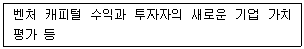
- 강건성
- 생산성
- 기술성
- 혁신성 또는 신시장 창출능력
(정답률: 77%)
47. 지능정보기술의 국내외 표준화 현황에 대한 내용으로 가장 거리가 먼 것은?
- 현재까지는 지능정보기술의 국제표준화 작업이 정보 통신 단말기와 서버 또는 네트워크를 통해 상호 제어를 위한 인터페이스 표준으로 진행 중이다.
- 국제표준기구에서 인공지능과 관련된 윤리규범을 추진하고 있다.
- 국내에서는 아직 지능정보 관련 표준화 단체가 없으나 자연어, 음성, 영상처리, 지식 추론 등의 기반 소프트웨어와 관련된 워킹그룹과 데이터 워킹그룹 구성을 위한 표준화 활동을 계획하고 있다.
- 사용자 맞춤형 정보서비스에 대한 표준화 작업과 콘텐츠 검색정보 서비스는 클라우드 환경에서 사용자의 정보검색에 대한 만족감을 충족시키고 있으며, 통신망이 고속화되면서 대용량의 정보검색이 가능해지고 있다.
(정답률: 74%)
48. 아래 내용에서 괄호 안에 들어갈 적절한 용어는?
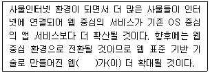
- 모바일
- 플랫폼
- 클라우드
- API(Application Programming Interface)
(정답률: 81%)
49. Fransman은 비즈니스 생태계 중 ICT 생태계를 기본적인 계층 모델로 6개의 계층(‘네트워크 요소, 네트워크 운영, 연결성, 미들웨어, 콘텐츠ㆍ애플리케이션ㆍ서비스, 최종소비’)으로 구분하였다. 이후, ICT 환경 변화를 고려하여 기존 모델을 4개의 계층 모델로 단순화 하였는데 단순화 된 4개의 계층으로 옳지 않은 것은?
- 연결성
- 네트워크 요소
- 네트워크 운영
- 최종소비
(정답률: 56%)
50. 마이클 포터(Michael E. Porter)는 사물인터넷 시대에서도 기존 5-Force 모델이 유효하다고 주장하고 있다. 5-Force 모델에서 5가지 경쟁 요인 중 아래 내용에 해당하는 것은 무엇인가?
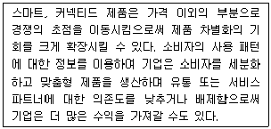
- 공급자 교섭력
- 구매자 교섭력
- 신규 진입의 위협
- 경쟁기업 간 경쟁 관계
(정답률: 73%)